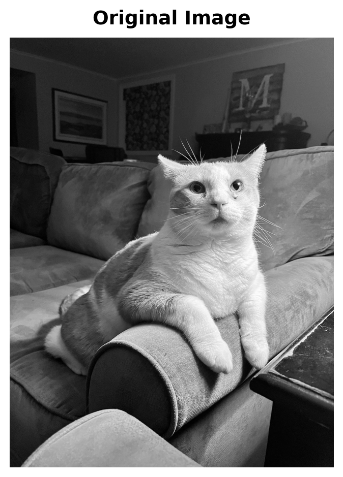
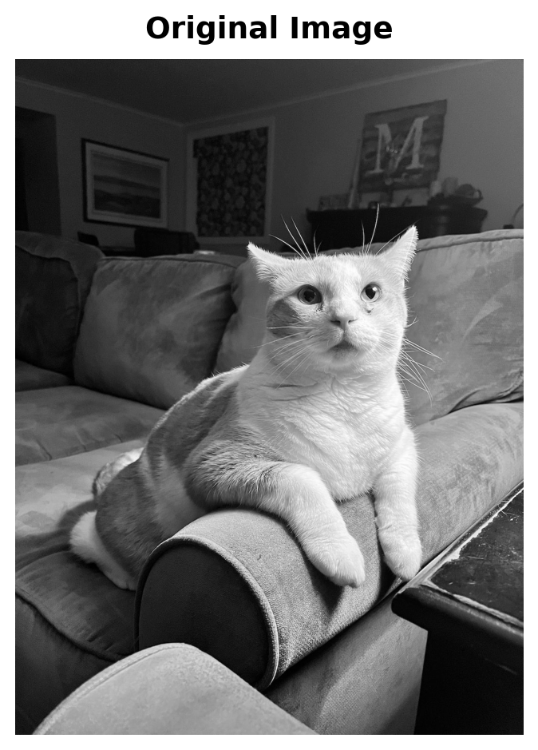
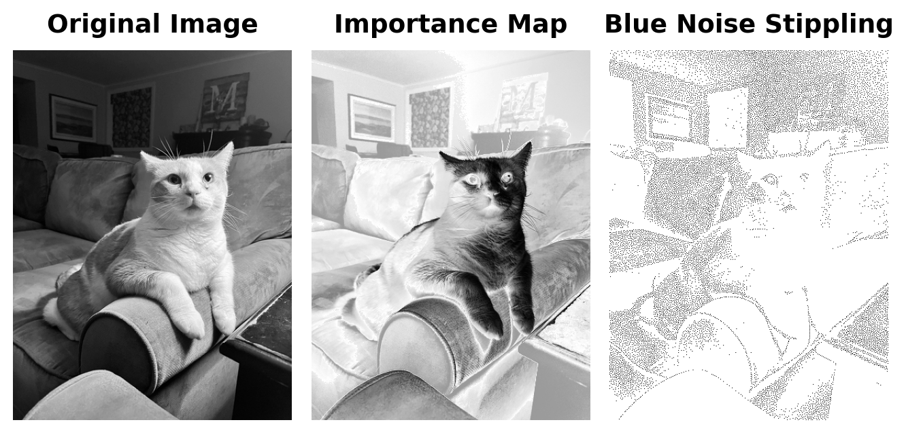
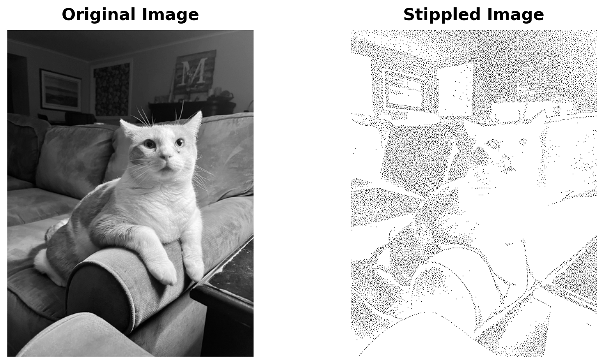

Image shape: (1414, 1064)
Image size: 1414x1064 pixelsBlue Noise Stippling: Creating Art from Data

Image shape: (1414, 1064)
Image size: 1414x1064 pixels:::
Resized image from (1414, 1064) to (512, 385) for processing
Final image shape: (512, 385) (should be 2D for grayscale)
Importance map computedGenerating blue noise stippling pattern...
Generated 15769 stipple points
Stipple pattern shape: (512, 385)
Using existing stippling with 15769 points
Image shape: (512, 385)
Generated 159 frames
Point counts: [1, 100, 200, 300, 400, 500, 600, 700, 800, 900, 1000, 1100, 1200, 1300, 1400, 1500, 1600, 1700, 1800, 1900, 2000, 2100, 2200, 2300, 2400, 2500, 2600, 2700, 2800, 2900, 3000, 3100, 3200, 3300, 3400, 3500, 3600, 3700, 3800, 3900, 4000, 4100, 4200, 4300, 4400, 4500, 4600, 4700, 4800, 4900, 5000, 5100, 5200, 5300, 5400, 5500, 5600, 5700, 5800, 5900, 6000, 6100, 6200, 6300, 6400, 6500, 6600, 6700, 6800, 6900, 7000, 7100, 7200, 7300, 7400, 7500, 7600, 7700, 7800, 7900, 8000, 8100, 8200, 8300, 8400, 8500, 8600, 8700, 8800, 8900, 9000, 9100, 9200, 9300, 9400, 9500, 9600, 9700, 9800, 9900, 10000, 10100, 10200, 10300, 10400, 10500, 10600, 10700, 10800, 10900, 11000, 11100, 11200, 11300, 11400, 11500, 11600, 11700, 11800, 11900, 12000, 12100, 12200, 12300, 12400, 12500, 12600, 12700, 12800, 12900, 13000, 13100, 13200, 13300, 13400, 13500, 13600, 13700, 13800, 13900, 14000, 14100, 14200, 14300, 14400, 14500, 14600, 14700, 14800, 14900, 15000, 15100, 15200, 15300, 15400, 15500, 15600, 15700, 15769]Now let’s create the GIF animation:

Grid size: 16 rows × 12 columns
Section size: approximately 32 × 32 pixels
Average tone statistics:
Overall mean: 0.363
Overall std: 0.218
Min: 0.027
Max: 0.872
Sections with tone close to skin tone (0.7 ± 0.1):
Row 11, Col 5: 0.709
Row 9, Col 11: 0.689
Row 8, Col 9: 0.678
Row 9, Col 10: 0.678
Row 5, Col 7: 0.723
Row 14, Col 3: 0.723
Row 10, Col 8: 0.672
Row 10, Col 6: 0.668
Row 10, Col 10: 0.663
Row 9, Col 6: 0.739
Row 11, Col 8: 0.656
Row 15, Col 2: 0.649
Row 14, Col 4: 0.646
Row 11, Col 9: 0.759
Row 12, Col 6: 0.639
Row 15, Col 5: 0.637
Row 8, Col 6: 0.637
Row 8, Col 11: 0.633
Row 15, Col 1: 0.632
Row 10, Col 9: 0.773
Row 5, Col 8: 0.778
Row 9, Col 5: 0.621
Row 15, Col 3: 0.621
Row 10, Col 0: 0.611
Row 15, Col 4: 0.609
Row 13, Col 6: 0.605
Row 10, Col 7: 0.798
Full grid of average tones (row, col):
Col 0 Col 1 Col 2 Col 3 Col 4 Col 5 Col 6 Col 7 Col 8 Col 9 Col10 Col11
Row 0 0.148 0.131 0.127 0.138 0.157 0.179 0.206 0.240 0.283 0.339 0.394 0.427
Row 1 0.091 0.156 0.154 0.141 0.137 0.150 0.206 0.237 0.248 0.259 0.356 0.410
Row 2 0.058 0.154 0.137 0.143 0.096 0.089 0.204 0.235 0.198 0.232 0.351 0.392
Row 3 0.057 0.138 0.107 0.134 0.106 0.095 0.186 0.131 0.132 0.164 0.164 0.337
Row 4 0.099 0.123 0.146 0.115 0.184 0.322 0.401 0.382 0.470 0.565 0.481 0.524
Row 5 0.080 0.128 0.246 0.254 0.280 0.297 0.568 0.723 0.778 0.564 0.526 0.495
Row 6 0.068 0.123 0.252 0.282 0.215 0.347 0.447 0.509 0.860 0.581 0.517 0.480
Row 7 0.137 0.124 0.180 0.285 0.338 0.514 0.489 0.599 0.811 0.585 0.546 0.492
Row 8 0.352 0.327 0.289 0.306 0.313 0.506 0.637 0.822 0.872 0.678 0.595 0.633
Row 9 0.424 0.473 0.504 0.346 0.428 0.621 0.739 0.817 0.818 0.811 0.678 0.689
Row10 0.611 0.501 0.302 0.364 0.306 0.424 0.668 0.798 0.672 0.773 0.663 0.478
Row11 0.339 0.337 0.243 0.209 0.461 0.709 0.599 0.833 0.656 0.759 0.489 0.312
Row12 0.315 0.220 0.157 0.128 0.122 0.339 0.639 0.371 0.460 0.359 0.265 0.244
Row13 0.244 0.242 0.117 0.188 0.109 0.094 0.605 0.419 0.439 0.293 0.095 0.237
Row14 0.165 0.234 0.578 0.723 0.646 0.213 0.225 0.362 0.552 0.274 0.030 0.052
Row15 0.217 0.632 0.649 0.621 0.609 0.637 0.471 0.473 0.374 0.110 0.027 0.048 